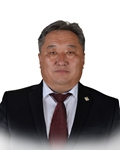

Member of the State Great Khural of Mongolia
Soltan Gombojai
Member of the State Great Khural of Mongolia SOLTAN Gombojai
Mongolian People's Party
Education, graduated schools, education degree:
1978 Secondary school #1, Bayan-Ulgii aimag
1979 Language preparation course, Irkutsk, USSR
1985 BA in Porcelain engineering technologist, University of Chemical Technology of Moscow, USSR
Working experience:
1985 - 1997 Chief technologist, porcelain factory, the Ministry of Food and Agriculture
1997 - 1998 Chairman of the Board, “Mongolian porcelain”
1998 - 2010 Executive Director, “Mongol shaazan”LLC
2010 - 2012 Advisor to the Prime Minister of Mongolia
2013 Chairman, MPP Committee of Bayan-Ulgii aimag
2016 Member of the State Great Hural (Parliament) of Mongolia
Awards:
2011 Order of “Polar star” 2013 Order of “Red Banner of Labour”
Foreign language knowledge:
Russian